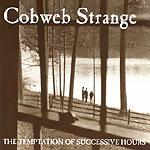

| Artist: | Cobweb Strange |
| Title: | The Temptation Of Successive Hours |
| Label: | self produced |
| Length(s): | 44 minutes |
| Year(s) of release: | 1996 |
| Month of review: | [08/2003] |
| 1) | Clarity's Advent | 4.37 |
| 2) | The Sand Reckoner | 4.01 |
| 3) | Gentle Darkness | 5.21 |
| 4) | Away From Truth | 2.57 |
| 5) | Solver | 3.47 |
| 6) | First | 5.01 |
| 7) | Edicius | 4.21 |
| 8) | Giant | 4.01 |
| 9) | Self-indulgence | 2.51 |
| 10) | Astral Projection | 7.11 |
The Sand Reckoner also opens pacefully with fast light rhythms and plenty of bass. It is audible that the composer of the band is also the bassplayer. The vocals and vocal melodies at times remind me of Rick Ray, but the vocals are less ehm harsh and the music is not so guitar focused (although it does contain a fair share). In addition the band is more 'progressive' with more variation. On the other hand, Cobweb Strange does not really sound like anything else which is a good thing for them, but bad for the reviewer who is thinking of things to say. The gloominess that lies over the music does remind me a bit of gothic music.
With Gentle Darkness the pace is gone out of the music. This is a slow and somber piece with hardly audible vocals against a backdrop of guitar strummings, all very relaxed, almost psychedelic. One thing I do not particularly like is the flatness of the vocal melody, although one might say they fit well with the music. All the vocal melodies tend to sound alike in my ears. But on the other hand, it should be considered part of their style, this understatedness. Later on the song mellows out nicely with a sleepy guitar solo.
Away From Truth is a rather short one with a bouncy bass line and strumming guitar. There is something folky about this one. Summerlin sounds a bit different on this one, less somber in a way. The music is also a bit more straightforward here. On Solver the guitar sounds quite far away, the vocals are back to 'normal', more melodically spoken than sung. The guitar solo is quite aggressive.
First is again relaxed, a ballad in the original sense. This is one of the more memorable tracks of the band, the up-beat chorus does tend to stick. Edicius opens well with menacing lines and a good urgent pace. This is not progmetal, but could be mistaken for it. The song is not as likable the opening suggest, unfortunately. But the guitar solo is nice again and the song does have some bite. The urgency comes back at the end.
Giant does not add anything new to what I have written before. Self-indulgence is a good name for this Rush like instrumental (yes, you make think of La Villa Strangiato here). But on the other hand nothing really special is happening here, the band is simply indulging itself. Do note the bass solos, which one is led to expect given who writes the songs.
Astral Projection is a rocky opener. Plenty of drive here. Woozy lyrics, this is also musically in the line of seventies UK progressive (blues)rock bands (meaning bands like Clear Blue Sky). At times, this song rocks hard.